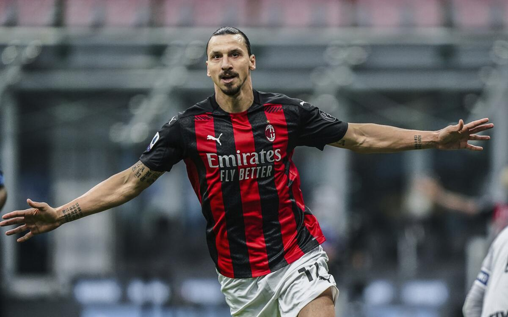
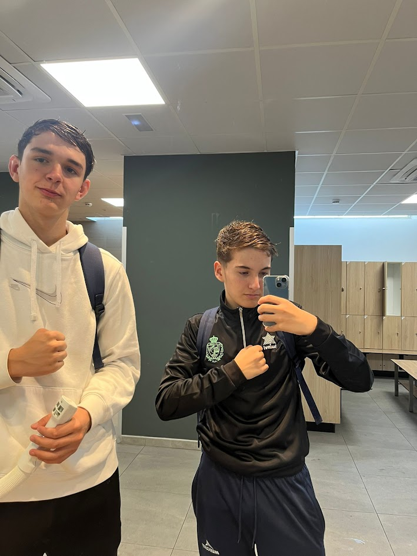

Todo empezó, como casi todo lo bueno, con una conversación entre amigos y un balón de por medio. Somos dos chicos de Zaragoza apasionados por el fútbol, de los que no desconectan cuando el árbitro pita el final. Crecimos respirando el ambiente de la grada y entendiendo que este deporte no son solo 22 personas corriendo; son historias, es táctica, es sufrimiento y es euforia. Por eso nace Fútbol Barro. Creamos este espacio porque sentíamos que faltaba un lugar donde hablar de fútbol con nuestra propia voz: sin filtros, con análisis profundos de jugadores que fueron tendencia y con esa pasión tozuda que nos caracteriza a los de esta tierra. Aquí encontrarás historias de fútbol vintage que merecen ser recordadas. Bienvenidos a nuestra casa. Bienvenidos a Fútbol y Barro.
En Fútbol Barro damos el paso hacia lo digital. A partir de ahora, todas nuestras entradas y abonos serán 100% electrónicos para reducir nuestro impacto ambiental.
Eliminamos el uso de tickets físicos, ahorrando toneladas de celulosa al año.
Acceso inmediato desde tu móvil, sin esperas ni residuos.
Es la cantidad de árboles que dejarán de talarse gracias a esta iniciativa.
⚽ Lee las pistas y demuestra lo que sabes de fútbol ⚽